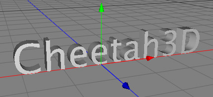

The warp modifier warps a mesh around a cylinder or ball. With this modifier it is possible to create bent 3D Fonts. See the images below for an example.

Properties
Type: You can whether to wrap the mesh around a cylinder or around a ball.
Width: The width of the pink rect.
Height: The height of the pink rect.
Radius: Specifies the radius of the ball or cylinder.
From axial angle: Starting angle of the cylinder or ball. This angle is measured around the Y- axis.
To axial angle: Ending angle of the cylinder or ball. This angle is measured around the Y- axis
From cenital angle: Only used when "ball" was chosen as the "type" property. It specifies the starting angle of the ball section.
To cenital angle: Only used when "ball" was chosen as the "type" property. It the specifies the ending angle of the ball section.